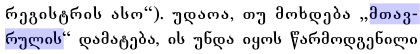

Updated Mon 13 Oct 2014 • tags georgian, scriptnotes
This page provides basic information about the two scripts used to write Georgian: Mkedruli (+Mtavruli), and Khutsuri (Asomtavruli+Nuskhuri). It is not authoritative, peer-reviewed information – these are just notes I have gathered or copied from various places as I learned. For character-specific details follow the links to the Georgian character notes.
For similar information related to other scripts, see the Script comparison table.
Clicking on red text examples, or highlighting part of the sample text shows a list of characters. Click on the vertical blue bar (bottom right) to change font settings for the sample text.
მუხლი 1. ყველა ადამიანი იბადება თავისუფალი და თანასწორი თავისი ღირსებითა და უფლებებით. მათ მინიჭებული აქვთ გონება და სინდისი და ერთმანეთის მიმართ უნდა იქცეოდნენ ძმობის სულისკვეთებით.
მუხლი 2. ამ დეკლარაცით გამოცხადებული ყველა უფლება და ყველა თავისუფლება მინიჭებული უნდა ჰქონდეს ყოველ ადამიანს განურჩევლად რაიმე განსხვავების, სახელდობრ, რასის, კანის ფერის, სქესის, ენის, რელიგიის, პოლიტიკური თუ სხვა რწმენის, ეროვნული თუ სოციალური წარმომავლობის, ქონებრივი, წოდებრივი თუ სხვა მდგომარეობისა. გარდა ამისა, დაუშვებელია რაიმე განსხვავება იმ ქვეყნის თუ ტერიტორიის პოლიტიკური, სამართლებრივი ან საერთაშორისო სტატუსის საფუძველზე, რომელსაც ადამიანი ეკუთვნის, მიუხედავად იმისა, თუ როგორია ეს ტერიტორია - დამოუკიდებელი, სამეურვეო, არათვითმმართველი თუ სხვაგვარად შეზღუდული თავის სევერენიტეტში.
From Scriptsource:
The Georgian language is spoken by approximately 3,900,000 people in Georgia, as well as by 355,000 people in Azerbaijan, Turkey and Iran. The earliest uncontested inscription in the language dates from the 5th century. Since that time, Georgian has been written in three distinct scripts. The original script was an inscriptional form called Asomtavruli, from which a manuscript form, Nuskhuri, was derived. For a time, these were combined in a bicameral system called Khutsuri in which Asomtavruli letters were used as the upper case and Nushkuri as the lower case. Since the 11th century, a third script has been attested, called Mkhedruli. There is some debate as to the origins of this third script; some scholars say that it evolved from the Khutsuri system, other, that it pre-dates it. What is generally agreed upon is that Mkhedruli was used as a secular script alongside the ecclesiastical Khutsuri until the 18th century, since which time it has been used for nearly all Georgian writing. The three scripts share the same letter names, despite having different letter shapes.
The Mkhedruli alphabet is also used for writing the Mingrelian and Svan languages spoken in Georgia, as well as Laz, spoken in Turkey.
From Wikipedia:
The Georgian scripts are the three writing systems used to write the Georgian language: Asomtavruli, Nuskhuri and Mkhedruli. Although the systems differ in appearance, all three are unicase, their letters share the same names and alphabetical order, and are written horizontally from left to right. Of the three scripts, Mkhedruli, once the civilian royal script of the Kingdom of Georgia and mostly used for the royal charters, is now the standard script for modern Georgian and its related Kartvelian languages, whereas Asomtavruli and Nuskhuri are used only by the Georgian Orthodox Church, in ceremonial religious texts and iconography.
Georgian scripts are unique in their appearance and their exact origin has never been established; however, in strictly structural terms, their alphabetical order largely corresponds to the Greek alphabet, with the exception of letters denoting uniquely Georgian sounds, which are grouped at the end. Originally consisting of 38 letters, Georgian is presently written in a 33-letter alphabet, as five letters are obsolete in that language. The number of Georgian letters used in other Kartvelian languages varies. Mingrelian uses 36: 33 that are current Georgian letters, one obsolete Georgian letter, and two additional letters specific to Mingrelian and Svan. Laz uses the same 33 current Georgian letters as Mingrelian plus that same obsolete letter and a letter borrowed from Greek for a total of 35. The fourth Kartvelian language, Svan, is not commonly written, but when it is, it uses Georgian letters as utilized in Mingrelian, with an additional obsolete Georgian letter and sometimes supplemented by diacritics for its many vowels.
The scripts are alphabets. Both consonants and vowels are indicated by letters. See the table to the right for a brief overview of features, taken from the Script Comparison Table.
Characters in the Unicode Georgian blocks represent 4 different letter styles for, with few exceptions, the same phonetic range. Modern Georgian uses only the mkhedruli style of lettering, though occasionally its mtavruli variants are used for emphasis or titles. The asomtavruli and nuskhuri styles are not well understood by ordinary Georgians. They are used together in ecclesiastical texts as the bicameral 'khutsuri' writing system.
The following list describes some distinctive characteristics of the Georgian script.
The script is very close to the phonetics of the language, and all 4 styles generally provide a letter for each sound in a very regular way.
When asomtavruli and nuskhuri are mixed as khutsuri, then words may be title-cased, and there was an attempt to introduce something similar for mkhedruli in the mid-20th century, but modern Georgian is normally written using lowercase only. If the mtavruli capitals are used, they are applied to a whole word at the minimum, so their use is more akin to ALL-CAPS than to the Capitalisation used in the Latin script.
The Georgian script characters in Unicode 11.0 are in the following blocks:
The following links give information about characters used for languages associated with this script. The numbers in parentheses are for non-ASCII characters.
For character-specific details see the Georgian character notes.
Georgian text is written horizontally, left to right.
All the character lists in this section show mkedruli to the left and mtavruli to the right.
Mkhedruli (მხედრული mχɛdruli mxɛdruli) is the standard set of characters for writing modern Georgian. It is normally used as a monocased script, even though there are Unicode mappings to uppercase variants (see mtavruli).
For more information about the characters, click on them and follow the links to the character notes page.
Mtavruli (მხედრული მთავრული mχɛdruli mtavruli mxɛdruli mtʰɑvruli) is also used for writing modern Georgian. These characters in Unicode are classed as uppercase versions of the mkedruli, however in modern text they are normally used like all-caps rather than at the beginning of a sentence or proper noun, etc. They are typically used to emphasise words or for headings. w
The mtavruli letters are have similar forms to the mkhedruli except that, in principle, all letters written in the mtavruli style appear with an equal height standing on the baseline, similar to small caps in the Latin script.
Dedicated characters were only introduced in Unicode v11. Prior to that, authors had to use special fonts with the mkhedruli code points in order to write mtavruli letters.
At the time of writing, there are still not many Unicode fonts that provide glyphs for the mtavruli characters, and browsers on OS X and iOS browsers map (most) mtavruli letters to mkhedruli glyphs if a font doesn't contain the necessary glyphs.
The following characters are used to write the modern Georgian language.
The following characters are obsolete in the Georgian language, but still used in other languages. They were removed by the Society for the Spreading of Literacy among Georgians, founded by Prince Ilia Chavchavadze in 1879 because they were redundant. w
IPA values are for the languages that use them. For previous Georgian pronunciation, click on the character and follow links to the character notes page.
The above letters are all used for the Svan language, and the 2nd in the list is used also for Mingrelian and Laz.
The characters below were specifically created for use with other languages (Svan and Mingrelian for the first two, and Laz for the last).
One Georgian-only character is no longer used (since the 1879 reform).
The characters below were used for other languages in the past, including Bats, Ossetian and Abkhaz.
All the character lists in this section show asomtavruli to the left and nuskhuri to the right.
Asomtavruli was used for writing historic Georgian inscriptions, and is really only used in liturgical texts now. These characters in Unicode are classed as uppercase versions of the nuskhuri, and in religious texts they are mixed in a similar way to capitals and lowercase characters in the Latin script. This mixture is called khutsuri.
Nuskhuri developed as a non-inscriptional alphabet, alongside Asomtravuli, and is also only used in liturgical texts now. These characters in Unicode are classed as lowercase versions of the asomtravuli.
In religious texts asomtravuli and nuskhuri are mixed in a similar way to capitals and lowercase characters in the Latin script. This mixture is called khutsuri.
The following characters are used to write the modern Georgian language.
The first 3 characters are obsolete in the Georgian language, but are still used in Svan, Mingrelian, and Laz languages. The last character in the list was created specifically for use with Svan.
The following characters are archaic. The first was used for Georgian, and the second for Ossetian.
There are no special arrangments for consonant clusters in Georgian.
Georgian normally has no combining marks, and there are none in the Unicode Georgian block.
It is, however, possible to find a combining accent character used with Laz for certain vowels.
The Georgian Unicode block contains only one punctuation mark.
In older texts it was used to signal the end of a paragraph.
Otherwise, Georgian uses standard western punctuation. CLDR lists the following non-ASCII punctuation.
The Georgian Unicode block contains no symbols, but Georgian uses a currency symbol and a number symbol from elsewhere in Unicode.
Georgian uses the standard western digits.
The Georgian currency symbol, ₾ [U+20BE LARI SIGN] is found in the Currency Symbols block.
Georgian doesn't do any shaping or positioning of characters based on the context, but individual letter forms can vary from font to font.
You can experiment with examples using the Georgian picker.
Words are separated by spaces.
Georgian uses standard western punctuation. See punctuation for a list of non-ASCII punctuation marks used in Georgian according to CLDR.
჻ [U+10FB GEORGIAN PARAGRAPH SEPARATOR] was formerly used to indicate the end of a paragraph, but is not common in modern Georgian. When used, it appeared at the end of the last line in the paragraph.
According to CLDR, the default quote marks for Georgian are „ [U+201E DOUBLE LOW-9 QUOTATION MARK] at the start, and “ [U+201C LEFT DOUBLE QUOTATION MARK] at the end.
When an additional quote is embedded within the first, the quote marks are « [U+00AB LEFT-POINTING DOUBLE ANGLE QUOTATION MARK] and » [U+00BB RIGHT-POINTING DOUBLE ANGLE QUOTATION MARK].
The following example shows quotation marks used to offset terms.
თავრული სტილი არასოდეს გამოიყენება როგორც ე.წ. „დიდი ასოები“.
Modern Georgian tends to use mtavruli characters for a word or phrase to show emphasis or highlight it. The mtavruli characters are used like ALL-CAPS and applied to whole words or phrases, and never just the first letter in a word.
The primary line-break opportunities for Georgian text are the spaces between words.
Georgian uses hyphenation to fit text to lines better.

TBD
The document Ready-made Counter Styles lists an additive counter style for Georgian. It uses the following mkhedruli characters: 10000 'ჵ', 9000 'ჰ', 8000 'ჯ', 7000 'ჴ', 6000 'ხ', 5000 'ჭ', 4000 'წ', 3000 'ძ', 2000 'ც', 1000 'ჩ', 900 'შ', 800 'ყ', 700 'ღ', 600 'ქ', 500 'ფ', 400 'ჳ', 300 'ტ', 200 'ს', 100 'რ', 90 'ჟ', 80 'პ', 70 'ო', 60 'ჲ', 50 'ნ', 40 'მ', 30 'ლ', 20 'კ', 10 'ი', 9 'თ', 8 'ჱ', 7 'ზ', 6 'ვ', 5 'ე', 4 'დ', 3 'გ', 2 'ბ', 1 'ა'. This list of characters includes several that are archaic in written text.
1 ⇨ ა 2 ⇨ ბ 3 ⇨ გ 4 ⇨ დ
11 ⇨ ია 22 ⇨ კბ 33 ⇨ ლგ 44 ⇨ მდ
111 ⇨ რია 2222 ⇨ ცსკბ
You can experiment with these styles using the Counter styles converter.
Further information needed for this section includes:
Glyph shaping & positioning
Cursive text
Context-based shaping
Multiple combining characters
Context-based positioning
Transforming characters
Structural boundaries & markers
Grapheme, word & phrase boundaries
Hyphens & dashes
Bracketing information
Quotations
Abbreviations, ellipsis, & repetition
Inline notes & annotations
Inline layout
Inline text spacing
Bidirectional text
Line & paragraph layout
Line breaking
Hyphenation
Text alignment & justification
Counters, lists, etc.
Styling initials
Baselines & inline alignment
Page & book layout
General page layout & progression
Directional layout features
Grids & tables
Notes, footnotes, etc.
Forms & user interaction
Page numbering, running headers, etc.